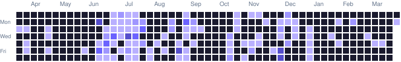

● พร้อมรับงาน freelance และ collaboration
สวัสดี ผม
ฮากิม มูดอ
นักพัฒนา Full‑Stack และ System Analyst ที่ชอบเปลี่ยนเรื่องซับซ้อน ให้เป็นระบบที่เรียบง่าย เป็นมิตร และใช้ได้จริง
01เรื่องของผม
ผมสร้างของที่
คนใช้แล้วไม่ต้องคิดเยอะ
ผมทำงานตั้งแต่การคุยกับผู้ใช้ วิเคราะห์ระบบ ออกแบบฐานข้อมูล ไปจนถึงเขียนโค้ดและนำขึ้นใช้งานจริง ประสบการณ์จากทั้งมหาวิทยาลัย ธุรกิจ และงาน freelance ทำให้ผมมองเห็นภาพใหญ่โดยไม่ทิ้งรายละเอียดเล็กๆ
หลักง่ายๆ ของผมคือ “Don't Repeat Yourself” — ไม่ใช่แค่ในโค้ด แต่รวมถึงกระบวนการทำงานที่ควรชัด คล่อง และดูแลต่อได้
แวะดู GitHub ของผม ↗TSTech Stack
Tech Stack
เครื่องมือและเทคโนโลยีที่ใช้สร้างระบบตั้งแต่ frontend ถึง infrastructure
02งานที่ภูมิใจ
โปรเจกต์ที่เลือกมาเล่า
ตั้งแต่ระบบมหาวิทยาลัย ไปจนถึงเครื่องมือสำหรับธุรกิจและชุมชน
GHGitHub Activity
GitHub Activity
@kimookpong ↗
Public Repositories
กำลังโหลด public repositories…
03เส้นทางที่ผ่านมา
เรียนรู้
สร้าง
แล้วทำให้ดีขึ้น
ผมเชื่อว่าซอฟต์แวร์ที่ดีเกิดจากการฟัง การทดลอง และปรับทีละนิด
04เริ่มบทสนทนา
มีไอเดียดีๆ อยู่ในหัว?
เล่าให้ผมฟังได้นะ
ไม่ว่าจะเป็นโปรเจกต์ งานร่วมมือ หรือแค่อยากทักทาย ผมยินดีคุยเสมอ ☕